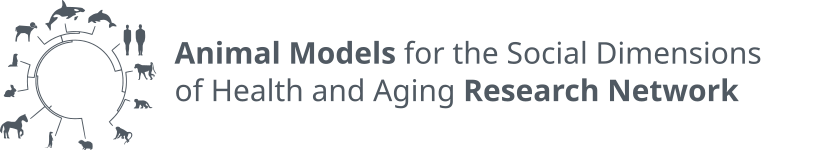

August 2026
R24 Pilot Grant to Study Group Social Behavior in Aging
The Zhang Lab has been awarded an NIH NIA R24 Pilot & Feasibility Grant from the Animal Models for the Social Dimensions of Health and Aging Research Network to study naturalistic group social behavior in aging and social loss. This award will enable us to explore how social dynamics change across the lifespan and in response to social loss, using rodent models. We are grateful for this support to advance our understanding of the social dimensions of aging.